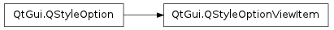

QStyleOptionViewItem ¶

Inherited by: QStyleOptionViewItemV2 , QStyleOptionViewItemV3 , QStyleOptionViewItemV4
Detailed Description ¶
The PySide.QtGui.QStyleOptionViewItem class is used to describe the parameters used to draw an item in a view widget.
PySide.QtGui.QStyleOptionViewItem contains all the information that PySide.QtGui.QStyle functions need to draw the items for Qt’s model/view classes.
For performance reasons, the access to the member variables is direct (i.e., using the . or -> operator). This low-level feel makes the structures straightforward to use and emphasizes that these are simply parameters used by the style functions.
For an example demonstrating how style options can be used, see the Styles example.
See also
PySide.QtGui.QStyleOption Model/View Programming
- class PySide.QtGui. QStyleOptionViewItem ¶
- class PySide.QtGui. QStyleOptionViewItem ( other )
- class PySide.QtGui. QStyleOptionViewItem ( version )
-
Parameters: - version – PySide.QtCore.int
- other – PySide.QtGui.QStyleOptionViewItem
Constructs a PySide.QtGui.QStyleOptionViewItem , initializing the members variables to their default values.
Constructs a copy of the other style option.
- PySide.QtGui.QStyleOptionViewItem. StyleOptionVersion ¶
-
This enum is used to hold information about the version of the style option, and is defined for each PySide.QtGui.QStyleOption subclass.
Constant Description QStyleOptionViewItem.Version 1 The version is used by PySide.QtGui.QStyleOption subclasses to implement extensions without breaking compatibility. If you use qstyleoption_cast() , you normally do not need to check it.
See also
QStyleOptionViewItem.StyleOptionType
- PySide.QtGui.QStyleOptionViewItem. StyleOptionType ¶
-
This enum is used to hold information about the type of the style option, and is defined for each PySide.QtGui.QStyleOption subclass.
Constant Description QStyleOptionViewItem.Type The type of style option provided ( SO_ViewItem for this class). The type is used internally by PySide.QtGui.QStyleOption , its subclasses, and qstyleoption_cast() to determine the type of style option. In general you do not need to worry about this unless you want to create your own PySide.QtGui.QStyleOption subclass and your own styles.
See also
QStyleOptionViewItem.StyleOptionVersion
- PySide.QtGui.QStyleOptionViewItem. Position ¶
-
This enum describes the position of the item’s decoration.
Constant Description QStyleOptionViewItem.Left On the left of the text. QStyleOptionViewItem.Right On the right of the text. QStyleOptionViewItem.Top Above the text. QStyleOptionViewItem.Bottom Below the text. See also
decorationPosition
- PySide.QtGui.QStyleOptionViewItem. showDecorationSelected ¶
- PySide.QtGui.QStyleOptionViewItem. decorationPosition ¶
- PySide.QtGui.QStyleOptionViewItem. decorationAlignment ¶
- PySide.QtGui.QStyleOptionViewItem. displayAlignment ¶
- PySide.QtGui.QStyleOptionViewItem. textElideMode ¶
- PySide.QtGui.QStyleOptionViewItem. decorationSize ¶
- PySide.QtGui.QStyleOptionViewItem. font ¶